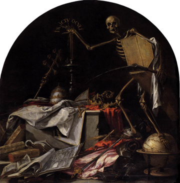
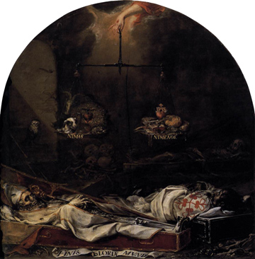

Dos cuadros alegóricos de Juan de Valdés Leal
(Haz clic en las imágenes para verlas con más detalle. Hacer clic una segunda vez permite ampliarlas aún más.)
|  |  |
Se presentan aquí los dos cuadros más conocidos de Juan de Valdés Leal, como representaciones emblemáticas del tema del desengaño, tan propio del Barroco. Son cuadros que se prepararon en 1663 para la capilla del Hospital de la Caridad en Sevilla. Los cuadros de Valdés Leal están a la entrada de la capilla por donde deben pasar todos los que la visitan. (Dentro se encuentran otros cuadros más luminosos y alegres de Esteban Murillo que pretenden mostrar cómo la caridad, representada por actos de misericordia, es la auténtica vía hacia la salvación.) El primer cuadro arriba, In ictu oculi ("En un abrir y cerrar de ojos" o en inglés, "In the blink of an eye") muestra a la Muerte con su guadaña (ing. scythe) y un ataúd pisando todos los símbolos del poder de este mundo, tanto seculares como eclesiásticos (armas, cetros, coronas, tiaras) y símbolos del arte y el conocimiento (un globo y varios libros, entre ellos uno con imágenes arquitectónicas). Con su mano derecha, la Muerte apaga una vela. El segundo cuadro, Finis gloriae mundi ("El fin de la gloria mundana") muestra en el fondo calaveras y esqueletos y en primer plano, los cuerpos putrefactos de un caballero de la orden de Calatrava y un obispo. Arriba, la mano derecha de Cristo sostiene una balanza con los lemas "Ni mas" y "ni menos". En un platillo de la balanza hay varios símbolos del pecado, representado por animales (un jabalí, un perro, una cabra, un pavo real, un sapo) y en el otro platillo hay una serie de símbolos cristianos (una Biblia, una cruz, un rosario, un pan, y el corazón sagrado de Jesús). Al fondo a la izquierda, todo lo preside una lechuza (o búho), ave nocturna que simboliza la sabiduría. |
|
{kind=link}
{kind=link}